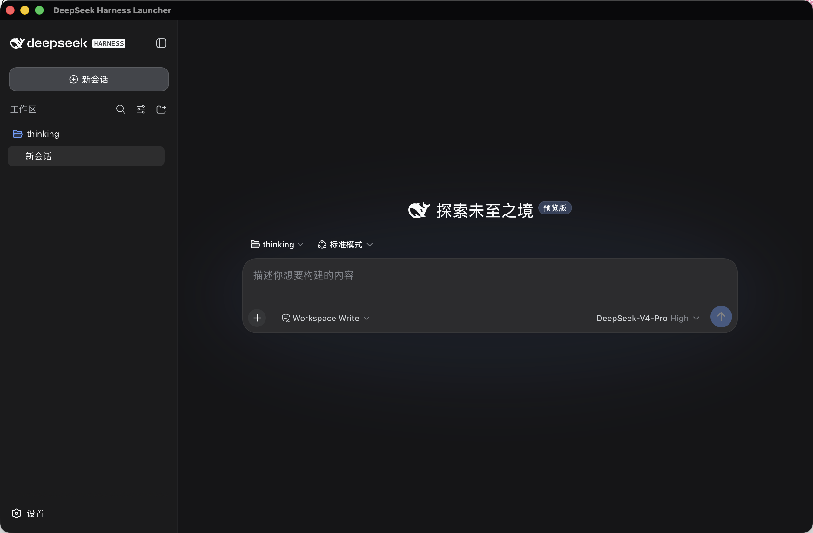

首启自动准备
把匹配的 Node 下载到应用自己的数据目录，再安装当前 dsh。无需配置全局环境，也不碰你现有的项目。

deepseek-harness-launcherDeepSeek Harness · Desktop Launcher
一个安静的桌面入口：替你准备 Node、安装并管理 dsh，随后直接打开 DeepSeek Harness。少一次环境折腾，多一段连续的工作时间。

Designed for the boring parts
启动器并不打断你的流程。它只在该出现的时候出现：第一次准备环境、版本需要确认，或在异常后帮你回到可用状态。
把匹配的 Node 下载到应用自己的数据目录，再安装当前 dsh。无需配置全局环境，也不碰你现有的项目。
发现新版时只提示，不擅自打断。确认升级后再切换到新版本，让每次变化都在你掌控中。
新版本启动失败时，自动回到上一个已经验证可用的版本；诊断信息也随时可以导出，方便排查。
Three calm steps
启动器把依赖、版本与本地服务串成一个可靠的起点；你只需要在准备完成后进入 Harness。
首次运行时，它识别本机状态并准备需要的 Node 运行时。
安装、校验与版本切换都在专属目录中完成，不干扰系统环境。
本地服务就绪后，主窗口直接承载 DeepSeek Harness。
Test builds
当前提供的安装包用于受控测试：macOS 使用 ad-hoc 签名，Windows 和 Linux 暂未签名。正式签名、公证和自动更新将在发布阶段启用。
将应用拖到“应用程序”后，在终端执行下面的命令，再打开应用。Gatekeeper 提示是未公证测试包的预期行为。
xattr -cr /Applications/deepseek-harness-launcher.app当前 Windows 测试包未使用 Authenticode，SmartScreen 的“未知发布者”提示是预期行为。不要关闭系统级 SmartScreen。
AppImage 和 deb 仅用于测试，请在干净环境完成首启、Node/dsh 安装、Host 启动、托盘退出和卸载验证。
DeepSeek Harness Launcher 是一个轻量的桌面壳子，专注把入口做得可靠、干净，也足够不打扰。